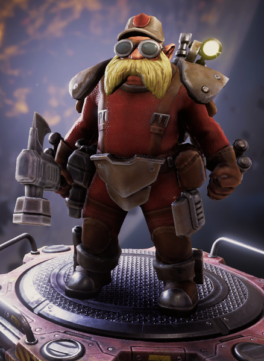

"Le plus intelligent du groupe, l'Ingénieur survit grâce à ses gadgets : tourelles, drones, et beaucoup de plasma pour éliminer rapidement les ennemis."
— Description de la classe
L'Ingénieur se concentre sur le contrôle de zone et le verrouillage des ennemis. Cela le rend idéal pour défendre une position fixe, mais il rencontre des difficultés lors de l'exploration et de la collecte de ressources.
| Sous-Classes | Arme de départ | Bonus de bases |
|---|---|---|
| L'Employé de Maintenance | Tourelle Automatique LMG |
|
| Le Bricoleur | Auto 210 "Warthog" |
|
| Le Démoliseur | LGP Deepcore |
|